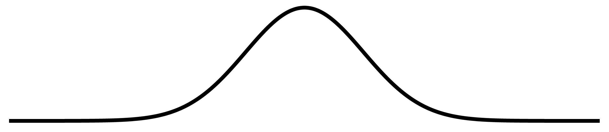
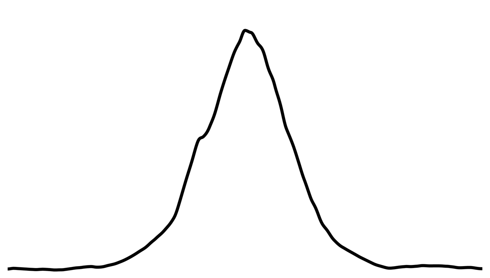

Modélisation de lignes crayonnées
L’an dernier, j’ai écrit un court programme pour modéliser des lignes dessinées au crayon. Le projet est encore embryonnaire et je veux continuer à le faire avancer sporadiquement. Je commence aujourd’hui par une relecture du code écrit l’an dernier et une synthèse des idées qu’il contient.
L’image ci-dessus a été générée avec ce programme. Elle contient plusieurs problèmes qu’il me faudra résoudre. Tout d’abord, les lignes démarrent et s’arrêtent abruptement; elles n’ont pas cette pointe naturelle que l’on s’attendrait à voir aux extrémités d’un trait dessiné à la main. Cela crée une brisure très artificielle dans le tracé des cercles. Ensuite, les lignes d’épaisseur moyenne sont les seules qui fonctionnent
Mais est-ce
du graphite,
du fusain,
du crayon
Conté… ?
bien visuellement, les plus fines et les plus grasses ayant un air peu naturel. Dernièrement, et c’est le plus grand problème, j’ai l’impression que la variation de l’épaisseur du trait est identique pour toutes les lignes dans le quadrant inférieur droit de chaque cercle. Il y a une régularité désagréable qui semble s’être glissée dans cet algorithme qui cherche à simuler le caractère imprévisible du crayon. De mauvais calculs trigonométriques se terrent peut-être là-dessous.
Distribution normale et variations semi-aléatoires
L’idée centrale du programme consiste à utiliser une distribution normale pour simuler la forme d’une mine de crayon ainsi que ses frottements sur le papier. Tout d’abord, notre distribution normale est calculée avec l’équation suivante :
Cette équation produit la courbe ci-dessous :

Cette colline représente donc l’extrémité de la mine du crayon (on peut ignorer les parties horizontales, qui ne seront pas utilisées). L’axe des y de la courbe représente le taux de probabilité qu’une particule de la mine soit déposée sur le papier.
Une vraie mine de crayon, cependant, n’est jamais aussi lisse et régulière que cette colline. Au niveau microscopique,
Accueillir
l’irrégulier.la mine autant que le papier sont fragmentés comme des chaînes de montagnes. On peut s’imaginer qu’à mesure que le crayon est traîné sur le papier, sa mine vacille ; elle change d’angle par rapport au papier ; ses différentes aspérités sont appuyées sur la feuille à divers moments et à des niveaux de pression variés.
Afin d’obtenir une mine de crayon irrégulière, les valeurs obtenues par l’équation de la distribution normale sont altérées par du bruit de Perlin. Voici à quoi ressemble notre mine de crayon maintenant :

Maintenant,
Dessiner
une ligne. il suffit de déplacer cette courbe fragmentée sur le plan et de dessiner des points noirs ou gris aux endroits où elle passe. La valeur y de la courbe déterminera la luminosité des points déposés : plus la valeur y est haute, plus le point dessiné est sombre. Le mode de mélange blendMode(DARKEST) de p5.js contribue aussi beaucoup à l’apparence finale de la ligne : chaque point déposé n’apparaît que s’il est plus foncé que le point qui est dessous.
J’ai inclus ci-dessous le code source du programme tel qu’il existe en ce moment. J’ai de nombreuses idées pour le modifier et l’améliorer (détaillées plus bas). En fait, il est certain que je vais tout réécrire. Vous pouvez aussi consulter le code source sur GitHub. Il est distribué librement avec une licence Apache 2.0.
var looping = true;
var exporting = false;
var arr = [];
var radiusAugmenter = 0;
var graphiteWeight = 1;
function setup() {
createCanvas(windowWidth, windowHeight);
background(255);
noStroke();
frameRate(1);
blendMode(DARKEST);
}
function draw() {
translate(width / 2, height / 2);
var total = 100;
var increment = TWO_PI / total;
for (var i = 0; i < TWO_PI + increment; i += increment) {
var x = cos(i) * (50 + radiusAugmenter);
var y = sin(i) * (50 + radiusAugmenter);
var vec = createVector(x, y);
arr.push(vec);
}
drawGraphite(arr);
if (exporting) {
frameExport();
}
radiusAugmenter += 50;
graphiteWeight += 1;
arr = [];
}
function drawGraphite(h) {
var drawCount = 0;
for (var j = 0; j < h.length - 1; j++) {
if (h[j + 1]) {
var v1 = h[j];
var v2 = h[j + 1];
var hypotenuse = dist(v1.x, v1.y, v2.x, v2.y);
var angle = atan2(v2.y - v1.y, v2.x - v1.x);
push();
translate(v1.x, v1.y);
rotate(angle + PI / 2);
for (var i = 0; i < hypotenuse; i++) {
translate(0, -1);
drawGraphiteSegment(drawCount);
drawCount++;
}
pop();
}
}
}
function drawGraphiteSegment(t) {
for (var i = 0; i < 10; i += 0.12) {
var x = i - 5;
var y = -(1 / sqrt(TWO_PI)) * pow(2.71828, -pow(x, 2) / 2);
var noiseValue = i + t / 100;
var n = noise(noiseValue) / 200;
n += noise(noiseValue) * 2 * y;
y += n;
y *= 300;
var n2 = noise(t / 50);
var n3 = noise(100 + t / 50);
var lineWidth = graphiteWeight;
x *= lineWidth;
if (x <= 0) {
x *= n2;
} else {
x *= n3;
}
var mapCrayon = map(y, -200, 0, 80, 255);
mapCrayon = constrain(mapCrayon, 0, 255);
fill(round(mapCrayon));
push();
var nGrain = noise(t) * lineWidth * 1;
translate(random(nGrain), random(nGrain));
ellipse(x, 0, 2);
pop();
}
}
function keyPressed() {
if (keyCode === 32) {
if (looping) {
noLoop();
looping = false;
} else {
loop();
looping = true;
}
}
}
function frameExport() {
var formattedFrameCount = "" + frameCount;
while (formattedFrameCount.length < 5) {
formattedFrameCount = "0" + formattedFrameCount;
}
save("grooves" + formattedFrameCount + ".png");
}Notes éparses
En fait, ce qu’il me faudrait, c’est une classe Line. N’importe quel procédé pourrait créer une nouvelle instance de Line et lui envoyer des vecteurs pour ajouter des segments à la ligne dessinée. La classe Line ferait la gestion automatique du bruit : elle s’assurerait que chaque nouveau segment de ligne ajouté soit une suite cohérente avec le dernier segment. Elle devrait aussi gérer les terminaisons — les débuts et fins de lignes. Il faudrait simplement que la méthode Line.drawSegment() reçoive en argument une booléenne nommée end. En recevant un segment terminal, l’instance de Line dessinerait un dernier segment pointu, puis changerait sa propriété booléenne terminated pour true. Le prochain segment dessiné réactiverait la ligne, qui dessinerait un nouveau segment pointu comme segment initial d’une nouvelle ligne. Ou plutôt, est-ce qu’une ligne qui reçoit un segment terminal devrait s’auto-détruire ?
Il pourrait aussi être intéressant de séparer le moment où les segments de lignes sont “commandés” par un programme et le moment où ils sont dessinés. Une instance de Line pourrait avoir une liste de segments à dessiner, et lorsqu’elle en reçoit de nouveaux, elle pourrait simplement les ajouter à cette liste. La méthode s’appelerait Line.addSegment(). Une autre méthode appelée Line.drawSegment() dessinerait simplement le prochain segment dans la liste. Ainsi, des milliers de segments pourraient être ajoutés dans un seul frame d’animation, mais au lieu d’être tous dessinés simultanément (ce qui ralentirait péniblement le système), ils seraient dessinés dans plusieurs frames d’animation consécutifs.
Je pourrais me servir de la fonction randomGaussian() qui est fournie avec p5.js et qui crée également une distribution normale — m’en servir au lieu de l’équation présentement utilisée.
Le code de l’an dernier utilise du bruit de Perlin unidimensionnel pour fragmenter la distribution normale alors qu’il me faudrait clairement utiliser du bruit bidimensionnel.
Idée improbable : toujours en restant dans des mathématiques à deux dimensions, on pourrait imaginer une modélisation de la circonférence complète de la mine. Ce serait une courbe brisée par du bruit mais qui se refermerait sur elle-même. On pourrait faire tourner la mine selon l’angle de déplacement du crayon. On pourrait même modéliser la dégradation progressive de la mine.
Sources
Mes réflexions pour ce projet ont démarrées avec la lecture de l’article Automatically Mimicking Unique Hand-Drawn Pencil Lines, signé par Zainab AlMeraj, Brian Wyvill, Tobias Isenberg, Amy A. Gooch et Richard Guy. Je n’ai au final pas utilisé les méthodes détaillées dans cet article mais il constitue néanmoins une lecture intéressante.